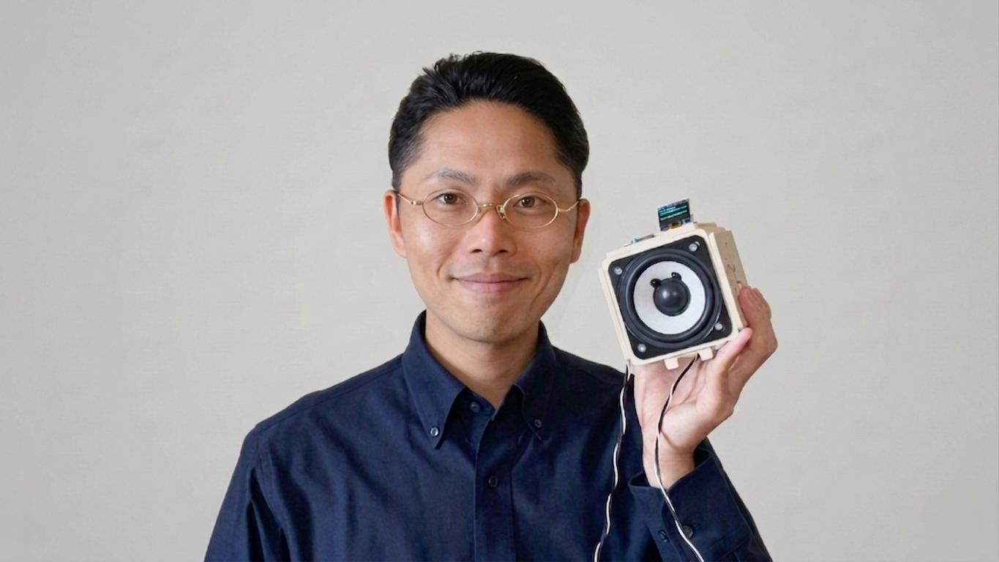

オメテックについて
ご挨拶とプロフィール紹介

ご挨拶
皆様、はじめまして。オメテックの佐藤と申します。
当ホームページをご覧いただき、誠にありがとうございます。
現在、多くの中小製造業や地元の企業様が「人手不足」や「技術導入の遅れ」といった深刻な課題に直面しています。 「ITを導入したいけど、IT部門がない」「IT人材を教育する余裕がない」「投資効果がわからない」「補助金を申請してまで導入するほどではない」といった中小企業ならではの構造的問題が多く存在しつつも、ちょっとした小規模なシステムを気軽に頼める業者が身近にいない…という現実があります。
本当は少しの工夫で解決できるはずの課題が、現場に届いていない。このギャップを解消し、便利な技術を広く普及させることで地域企業の力を底上げしたい――。そんな強い想いから、個人事業としての「オメテック」を設立いたしました。
当方は大企業向けのような高額で複雑なシステムではなく、それぞれの現場の目線に立った「"ちょうどいい"機能で、本当に役に立つ道具」をオーダーメイドで試作・開発することを大切にしています。現場ですぐに使えるシステムの構築はもちろん、導入後も置き去りにしない丁寧なサポートをお約束します。
💡 ちなみに・・・
写真で私が手に持っているのは、自作した「リアルタイム・ボイスチェンジャーマシン」です。一見するとおもちゃのようなガジェットですが、ここに詰め込まれた回路設計やプログラムの技術は、工場の「見える化」や「省力化・自動化」と全く同じ技術基盤から成り立っています。
どんな課題でも、まずは一緒に考えて、泥臭く解決策をひねり出していきましょう。
まずは小さな一歩から。貴社の現場改善を始めてみませんか？